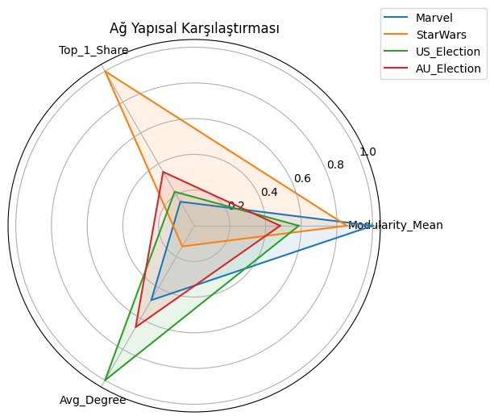
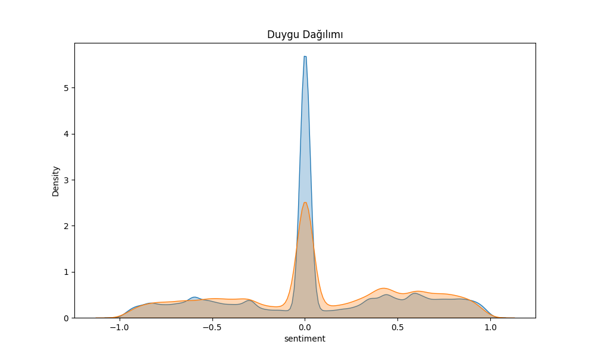
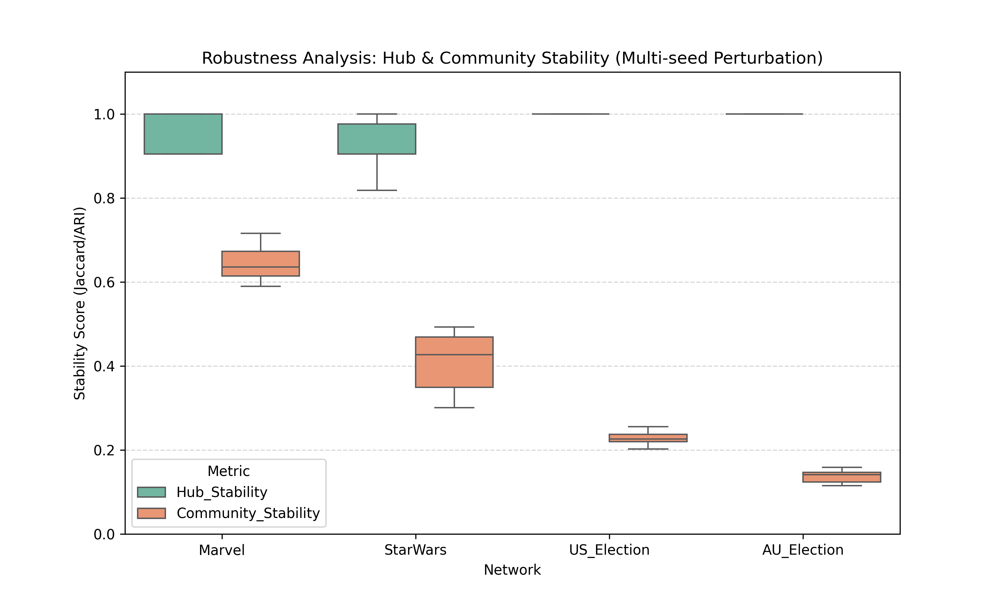
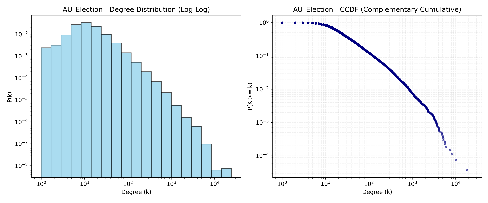
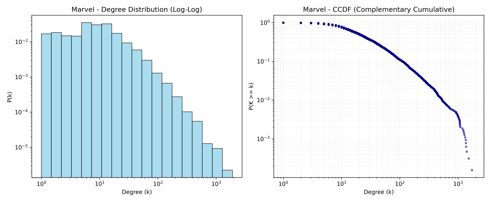
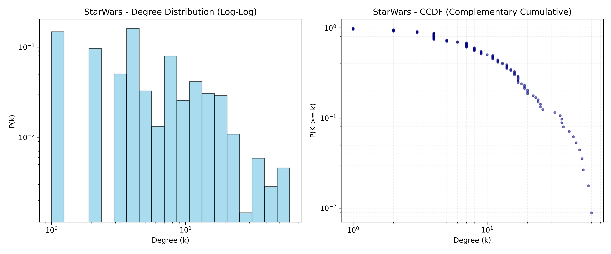
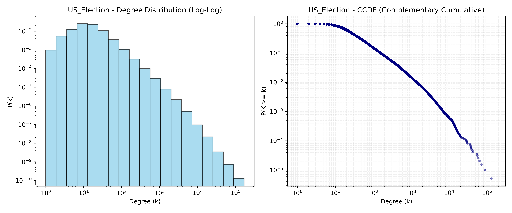

🔬 Sosyal Ağ & Bilimsel Validasyon Raporu
Otomatik Robustness, Kalibrasyon ve Metodolojik Doğrulama Sonuçları
Son Güncelleme: 08.02.2026 03:19Analiz Paketi: 20260208
Results_20260208_0035📄 Bilimsel Rapor & Kanıtlar
⚖️ Kalibrasyon & Validasyon
📈 Görsel Kanıtlar (CCDF, Stability Boxplots)

Analiz_1_Radar

Analiz_4_Sentiment

fig_hub_stability_boxplot

fig_loglog_ccdf_AU_Election

fig_loglog_ccdf_Marvel

fig_loglog_ccdf_StarWars

fig_loglog_ccdf_US_Election
Analiz Paketi: 20260207
Results_20260207_2141📄 Bilimsel Rapor & Kanıtlar
⚖️ Kalibrasyon & Validasyon
📈 Görsel Kanıtlar (CCDF, Stability Boxplots)

fig_ccdf_degree_AU_Election

fig_ccdf_degree_Marvel

fig_ccdf_degree_StarWars

fig_modularity_stability
Analiz Paketi: 20260207
Results_20260207_2121📄 Bilimsel Rapor & Kanıtlar
⚖️ Kalibrasyon & Validasyon
📈 Görsel Kanıtlar (CCDF, Stability Boxplots)

fig_ccdf_degree_AU_Election

fig_ccdf_degree_Marvel

fig_ccdf_degree_StarWars

fig_modularity_stability